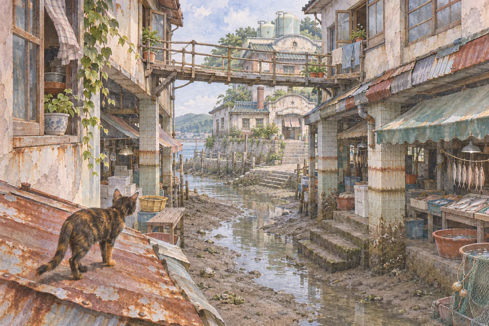

물목시에는 주소가 두 개씩 있다
저울집 딸의 돌잔치 초대장에는 이렇게 적혀 있다. 물이 빠지면 생선저울 앞 셔터로, 물이 들면 파란 이층 창으로 오세요. 셔터 뒤 계단을 오르면 그 파란 창을 낸 부엌이 나온다. 아래층 문설주에는 막내의 키를 잰 연필금 바로 위로 지난가을 바다가 남긴 갈색 금이 지나간다.
길고양이 외상에게 저울집 입구는 하나 더 있다. 덕장 차양에서 부엌 쪽창을 겨냥해 뛰면 멸치 대가리를 다듬는 할머니의 팔꿈치 옆에 떨어진다. 이름도 거기서 얻었다. 할머니가 외상을 달아 주는 손님 가운데 제 이름을 듣고도 돌아보지 않는 건 이 고양이뿐이다.

바다가 돌아온 지 아홉 해
옛날의 물목은 강어귀의 갯벌을 메워 세운 항구였다. 서쪽 철둑 위에 서면 시가지 지붕 너머로, 시장 바닥보다 높은 곳을 지나는 화물선의 불빛이 보였다. 바다 쪽 수문과 밤새 돌아가는 배수장이 그 높이 차를 감당했다.
해안을 따라 도시들이 차례로 정전되던 해, 먼 나라의 항구들까지 선적을 멈췄다. 물목에는 배수장에 넣을 경유가 한 달 넘게 오지 않았다. 가을 폭풍에 동쪽 방조제 한 구간이 터졌다. 물이 빠져나가며 옛 갯골을 다시 팠고, 그 위에 지은 세관과 버스 차고지가 기울었다. 지금도 썰물이 깊은 날이면 차고지의 흰 주차선 사이로 게가 다닌다.
첫겨울을 난 사람들은 그해 잃은 이들의 제삿날을 방조제가 터진 음력 날짜로 잡았다. 물목을 떠난 가족이 돌아오는 날도 그 무렵이다. 내륙의 보리와 바늘은 서쪽 철둑의 손수레로, 강 건너 섬의 생선과 소식은 동쪽 나루의 배로 온다. 한때 항구마다 내일 날씨를 불러 주던 해안 방송은 끊긴 지 여섯 해째다. 나루 벽에 붙은 일기예보는 아침에 들어온 배의 선장이 지나온 쪽 하늘을 보고 적은 것이다.
물이 차고 빠지며 생기는 네 동네
서쪽 철둑에서 동쪽 나루 쪽으로 내려가면 저울시장이 나온다. 시장 북쪽 비탈 위로 솟은 목욕탕 굴뚝이 어느 골목에서나 보인다. 물은 동쪽에서 하루 두 번 들어온다. 나루에서 바닥이 드러난 뒤에도 시장 안쪽은 한참 더 잠겨 있다. 저울집 난간의 셋째 볼트가 보이면 그제야 수레 하나 지날 폭의 콘크리트 턱이 드러난다.
| 동네 | 사람의 길 | 외상의 길 |
|---|---|---|
| 동쪽 나루 | 물이 차면 계단 윗참에 짐배를 댄다. 빠지면 배가 갯골에 갇혀 다음 물을 기다린다. | 배 밑창이 펄에 닿는 소리가 나면 계단으로 간다. 하역할 때 떨어진 새우가 돌 틈에 끼어 있다. |
| 저울시장 | 썰물장은 콘크리트 턱에 선다. 들물이 셋째 볼트를 덮으면 좌판을 걷고 이층 창에서 흥정을 잇는다. | 셔터 위 차양의 마른 천을 밟는다. 비에 젖은 날은 천이 배 밑까지 처진다는 걸 한 번 빠져서 배웠다. |
| 북쪽 목욕탕 | 언덕을 오르면 옛 여탕 매표구에서 식수를 받는다. 큰물 때는 시장 이층에서 널빤지 다리로 건넌다. | 옛 얼음창고의 다락을 통과한다. 끝에서 뛰어내리면 목욕탕 뒤뜰 물받이 곁이다. |
| 서쪽 철둑 | 침목을 걷어 낸 자리에 보리를 심었다. 이랑 옆 손수레길이 내륙 장터까지 이어진다. | 쥐가 살이 찌는 곳이다. 손수레에 매달린 개 방울이 들리면 자갈 비탈 중간에서 돌아선다. |
바다 쪽에서 거센 바람이 며칠씩 불 때는 물 빠지는 시간이 한참 늦어진다. 그동안은 이층 주소만 쓴다. 썰물장 사람들은 첫 심부름을 나서는 아이에게 빈 바구니를 주고, 같은 집에 아랫문으로 한 번 윗문으로 한 번 다녀오라고 한다.
뜨거운 물을 팔던 집에서 찬물을 받는다
목욕탕의 마지막 목욕 손님은 아홉 해 전 사람이다. 지금은 지붕 여섯 채의 빗물받이가 이 집으로 모인다. 비가 시작되면 물지기는 첫물을 마당으로 흘려 기왓가루와 새똥을 씻어 낸 뒤 홈통을 저장조 쪽으로 돌린다. 사람들이 저녁에 찾아가는 건 모래 여과통을 거쳐 공동 부엌에서 끓인 물이다. 욕조에는 따로 허드렛물을 받는다. 옛 냉탕 타일에 남은 큼직한 ‘냉’ 자를 아이들은 ‘빨래하는 곳’이라는 뜻으로 읽는다.
식구 수만큼 받는 첫 물은 누구에게나 돌아간다. 매표구 벽에는 집집마다 하나씩 옛 신발장 열쇠가 걸려 있다. 물지기가 열쇠를 뒤집어 숫자를 가리면 그 집이 오늘 몫을 받아 갔다는 뜻이다. 건어물을 불리거나 염색할 물이 더 필요한 집은 땔감을 대거나 솥 당번을 선다. 오래 가문 해에는 추가 몫부터 끊긴다. 그때 저울집 식구들은 짠 생선 한 토막을 사흘에 걸쳐 조금씩 찢어 먹는다.
어느 지붕의 물을 누가 마실지는 그 아래 사는 사람이 정한다. 한여름 건어물집들이 지붕에 생선을 널고 홈통을 빼 버리면 목욕탕에서는 비 한 차례를 통째로 놓친다. 덕장을 펴는 날을 정하는 모임에 물지기와 어부가 함께 앉는 까닭이다. 이 자리에는 늘 젖은 기와 조각 하나가 놓인다. 한쪽이 아직 덜 말랐으면 오늘 생선을 널자는 말은 꺼내기도 어렵다.
외상의 동네는 처마 밑에 남는다
외상은 저울집 덕장 밑에서 태어난 네 살짜리 암컷이다. 털빛은 얼룩덜룩하고 오른쪽 앞발만 누룽지색이다. 저울집에서 먹고 옛 얼음창고의 코르크 단열재 위에서 잔다. 철둑 아이가 헌 스웨터로 만들어 준 잠자리는 사흘 만에 수고양이 한 마리가 차지했다. 아이는 아직도 외상이 거기 사는 줄 안다.
들물이 지나간 골목 바닥에서는 어제 어느 고양이가 먼저 다녀갔는지 알아내기 어렵다. 처마 안쪽의 녹슨 못, 유리창 깨진 자리에 감아 둔 헝겊, 할머니가 셔터를 받쳐 두는 나무쐐기에는 뺨을 비빈 냄새가 오래 간다. 쐐기를 새것으로 바꾼 날이면 외상은 낯선 가게에 온 듯 입구부터 빙 돈다. 그래서 할머니는 낡은 쐐기를 며칠 더 옆에 놓아둔다.
겨울에는 나루 가장자리가 얼고 빗물도 뜸하다. 솥 당번은 물을 다 나눠 주고 나면 바닥에 남은 한 모금을 뒤뜰의 이 빠진 접시에 따른다. 외상은 그 접시부터 핥고 하루를 시작한다. 봄에는 갯골에서 숭어 새끼를 쫓다가 왜가리에게 자리를 뺏긴다. 장마철이 가장 고약하다. 창고 쥐들이 높은 선반으로 올라오고 나면 시장의 고양이들이 다락 하나에 몰린다. 맑은 날이면 외상 곁에서 배를 드러내고 자던 흰 암컷도 그때는 들보 위에서 깜박깜박 존다.
올 장마 전에 닫힐 창
올봄 철둑에서 종자로 쓸 보리 세 자루를 시장에 맡겼다. 철둑 헛간은 지붕을 고치는 중이고 시장 얼음창고 다락은 지난 아홉 해 동안 한 번도 젖지 않았다. 열흘 뒤에 보니 자루 한 귀가 터지고 낟알에 쥐 이빨 자국이 나 있었다. 농사꾼들은 강 건너 양계장을 헐 때 걷어 둔 철망을 주문했다. 배가 들어오는 대로 다락 양쪽 통풍창에 나눠 댈 참이다.
시장 회의에서 사람들은 철망 값을 어느 집이 얼마나 낼지 의논했다. 외상에게 그 창은 물이 들었을 때 개 곁을 지나지 않고 목욕탕으로 갈 수 있는 유일한 길이다. 창이 닫히면 널빤지 다리 어귀에서 수레꾼이 개를 데려갈 때까지 기다려야 한다. 저울집 할머니는 요새 생선 가시를 치운 놋접시에 맹물을 조금 받아 둔다. 덕장에 외상이 들른 밤이면 말린 가자미에 꼬리가 온전히 붙어 있는 걸 여러 번 본 사람이다.
철망을 실은 배가 나루에 들어온 날, 외상은 빈 놋접시를 앞발로 한 번 밀었다. 달그락 소리에 할머니가 바가지를 들기도 전에 돌쟁이가 차양 쪽으로 기어갔다. 저울집 막내가 맨 처음 외운 주소는 그 누런 발이 올라오는 자리다.